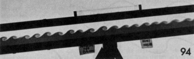
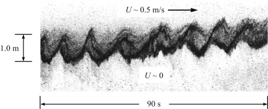
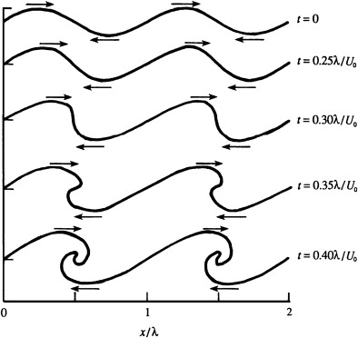

The Kelvin–Helmholtz instability is caused by the destabilizing effect of shear, which overcomes the stabilizing effect of stratification. This kind of instability can be generated in a laboratory by filling a horizontal glass tube (of rectangular cross section) containing two liquids of slightly different densities (one colored) and gently tilting it. This starts a current in the lower layer down the plane and a current in the upper layer up the plane.

Shear instability of stratified fluids is ubiquitous in the atmosphere and the ocean and is believed to be a major source of internal waves. This figure shows an acoustic backscatter image of Kelvin–Helmholtz vortical structures observed in a river estuary at ebb tide when nominally fresh water is flowing over saltier and denser ocean water. Similar images of injected dye have been recorded in oceanic thermoclines and in billow cloud patterns.

The figure shows a nonlinear numerical calculation*of the evolution of a vortex sheet that has been given a small transverse sinusoidal displacement with wavelength $\lambda$.
The density difference across the interface is zero, and $U_0$ is the velocity difference across the vortex sheet.
The smaller vertical displacements shown in two figures above are consistent with the effects of stratification that are absent from the calculations shown in this figure.